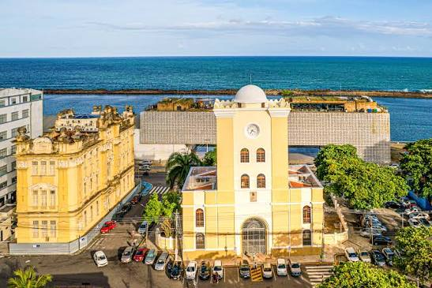

Torre Malakoff & Cais do Sertão: Onde o Passado e o Sertão se Encontram! 🌵🏛️

Prepare-se para uma viagem no tempo e na cultura sem sair do
lugar! Bem no coração do Recife Antigo, dois
ícones dividem a cena com muita personalidade: a histórica
Torre Malakoff e o vibrante museu
Cais do Sertão.
Enquanto a imponente Torre Malakoff guarda séculos de história,
exposições de arte e um terraço com uma vista
panorâmica de tirar o fôlego, o Cais do Sertão traz toda a
poesia, música e força do sertão nordestino em uma experiência
totalmente moderna e interativa.
História, arte e tecnologia reunidas sob o sol de Recife. Vamos nessa? ☀️✨